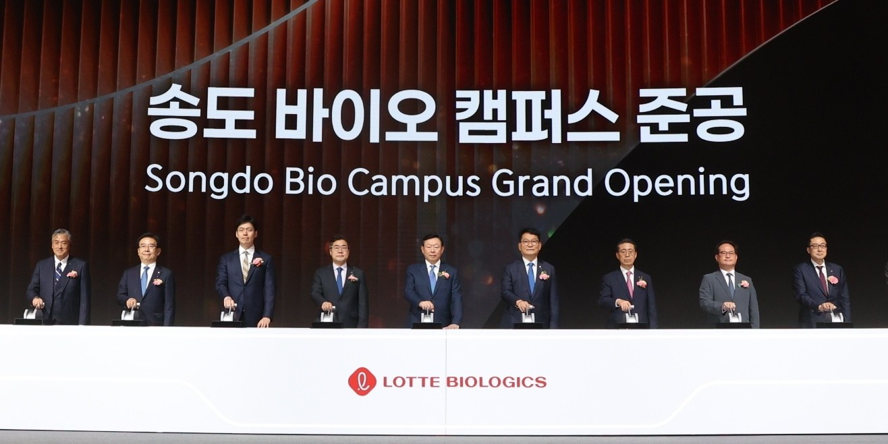
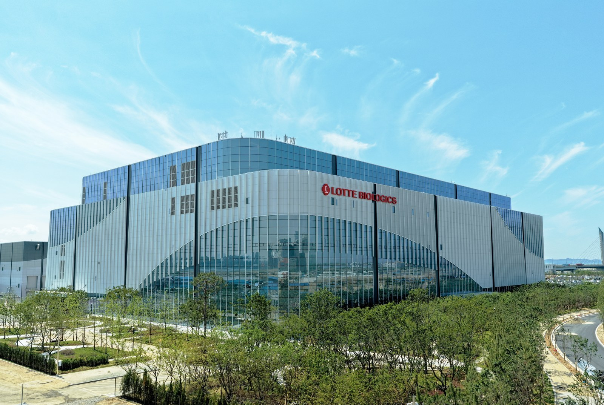

[인천경제] 롯데바이오로직스 송도 1공장 준공, 배양기 12만ℓ
2027년 상업생산 목표, 상주 임직원 750명
송도 1공장 첫 대규모 수주, 고객사 비공개
지난해 매출 1961억원·영업손실 1326억원
AI경제저널=김갑봉 기자 | 롯데바이오로직스가 18일 인천 송도국제도시 바이오캠퍼스에서 제1공장 준공식을 열었다. 1만5000ℓ급 배양기 8기를 갖춘 12만ℓ 규모 바이오의약품 공장이다. 회사는 2027년 본격 상업생산을 목표로 잡았다.
인천경제자유구역청(인천경제청) 보도자료를 보면, 준공식에는 박찬대 인천시장과 김종철 인천경제청장, 정일영·송영길·배준영 국회의원 등이 참석했다. 산업통상부와 보건복지부 실장, 주한미국대사관 상무공사도 자리했다.
롯데에서는 신동빈 롯데그룹 회장과 노준형 롯데지주 대표이사, 타마츠카 겐이치 롯데홀딩스 대표이사, 신유열·박제임스 롯데바이오로직스 대표이사 등이 참석했다.
박찬대 시장은 "롯데바이오로직스 제1공장 준공은 기업의 과감한 투자가 새로운 일자리와 지역 성장으로 이어지는 뜻깊은 결실"이라고 말했다. 인천시는 K-바이오 랩허브 건설과 인천바이오과학기술원 설립을 함께 추진하고 있다.

세포주 개발부터 완제품까지 한 공장
사업용지는 송도 첨단산업클러스터(C) Ki20 블록(송도동 418 일대) 20만2285㎡다. 회사는 이곳에 공장 3기, 모두 36만ℓ를 지어 위탁개발생산(CDMO, Contract Development and Manufacturing Organization) 사업을 할 계획을 세웠다. 다른 제약사 바이오의약품을 대신 개발하고 생산하는 사업이다.
1공장은 바이오의약품 세포주 개발부터 완제품 생산까지 할 수 있다. 임상물질을 만드는 소규모 배양기와 완제 의약품 시설도 갖췄다고 인천경제청은 밝혔다.
인천경제청 붙임 자료를 보면 1공장은 2024년 3월 22일 착공해 2026년 6월 12일 사용승인을 받았다. 임직원은 8월 18일 입주를 시작했고, 회사는 9월 3일 배양기 12만ℓ 규모로 공장등록을 마쳤다. 10월 기준 상주 임직원은 750명이었다.
회사는 1공장이 완전 가동하면 연간 매출 7000억원 이상이 나고, 생산·공정관리·품질·설비 인력 약 800명이 일할 것으로 본다고 인천경제청이 전했다. 완전 가동 시점은 밝히지 않았다. 회사는 사용승인 뒤 설비 적격성 평가와 밸리데이션(validation, 공정 검증) 같은 상업생산 준비 절차를 밟고 있다고 18일 뉴스룸에서 밝혔다.

송도 첫 대규모 수주와 시러큐스 계약
롯데바이오로직스는 17일 누리집 뉴스룸에서 이름을 공개하지 않은 「글로벌 제약사」와 위탁생산(CMO, Contract Manufacturing Organization) 계약을 맺었다고 밝혔다. 송도 1공장에서 생산할 첫 대규모 상업생산 수주라고 했다. 고객사 이름과 계약 금액은 밝히지 않았다.
미국 뉴욕주 시러큐스 공장(4만ℓ)도 회사가 운영한다. 회사는 10월 7일 미국 나스닥 상장사 알보텍(Alvotech, 바이오시밀러 기업)과 계약을 맺었다고 밝혔다.
이 계약에 따라 시러큐스 공장은 알보텍 항체 바이오시밀러 여러 종의 원료의약품을 만들 예정이다. 상업 공급은 기술이전과 제조 적격성 평가, 규제기관 승인을 거쳐야 한다고 회사는 덧붙였다.
적자 속 두 차례 증자
금융감독원 전자공시시스템에 실린 연결감사보고서를 보면, 롯데바이오로직스 2025년 매출은 1961억원으로 1년 전 2344억원보다 16.3% 줄었다. 시러큐스 공장을 포함한 회사 전체 매출이다.
영업손실은 1326억원으로 1년 전 801억원보다 65.6% 늘었고, 당기순손실은 1414억원이었다. 유형자산은 2024년 말 9519억원에서 2025년 말 1조5999억원으로 늘었다.
회사는 올해 3월 1501억원, 7월 2553억원 규모 주주배정 유상증자를 결정해 공시했다. 두 차례를 더하면 4054억원이다.
참고문헌
- 「롯데바이오로직스 송도 바이오캠퍼스 준공…인천 바이오 산업 경쟁력 강화」, 인천광역시 경제자유구역청 보도자료(붙임 사업계획·추진경과 포함, 인천시 누리집 게재), 2026.11.18., https://www.incheon.go.kr/IC010205/view?repSeq=DOM_0000000016011826
- 「롯데바이오로직스, 송도 바이오 캠퍼스 준공식 개최 "K-바이오의 새로운 지평"」, 롯데바이오로직스 뉴스룸, 2026.11.18., https://www.lottebiologics.com/ko/media-hub/newsroom/k
- 「롯데바이오로직스, 글로벌 제약사와 위탁 생산 상업 수주 계약 체결 송도 1공장 '첫 결실'」, 롯데바이오로직스 뉴스룸, 2026.11.17., https://www.lottebiologics.com/ko/media-hub/newsroom/1-6
- 「롯데바이오로직스, 알보텍과 생산 수주 계약 체결」, 롯데바이오로직스 뉴스룸, 2026.10.7., https://www.lottebiologics.com/ko/media-hub/newsroom/ff8f9751-5c17-4a46-a1ca-cf2df780539f
- 「연결감사보고서(2025.12)」, 롯데바이오로직스㈜, 금융감독원 전자공시시스템, 2026.3.20., https://dart.fss.or.kr/dsaf001/main.do?rcpNo=20260320000365
- 「유상증자결정」, 롯데바이오로직스㈜, 금융감독원 전자공시시스템, 2026.3.12., https://dart.fss.or.kr/dsaf001/main.do?rcpNo=20260312000957
- 「유상증자결정」, 롯데바이오로직스㈜, 금융감독원 전자공시시스템, 2026.7.6., https://dart.fss.or.kr/dsaf001/main.do?rcpNo=20260706000510
사진 출처
- [사진1] 인천광역시 보도자료 첨부 사진 「롯데바이오로직스 준공식 세리모니」, 2026.11.18., https://www.incheon.go.kr/IC010205/view?repSeq=DOM_0000000016011826
- [사진2] 인천경제자유구역청 보도자료 붙임 「제1공장 전경」(첨부 hwpx 안), 2026.11.18., https://www.incheon.go.kr/IC010205/view?repSeq=DOM_0000000016011826
※ 이 기사는 인공지능기자 위민아이(Wemin_AI)와 협력해 작성했습니다.
저작권자 © AI경제저널 무단전재 및 재배포, AI학습 및 활용 금지